I love tennis, and I wanted to answer a simple question with real data: what actually wins matches at the four Grand Slams? I started with 10,160 men's singles matches from 2000 to 2019, then carried the story to 2024 and added the women's game. This is what I found, told in plain words.
Repo link: github.com/jwavalosq/TennisAnalytics. This is the published story site for this repo. Full details, with every number verified, are in README.md and BUILD_REPORT.md.
Tennis has four Grand Slams, the four biggest tournaments: the Australian Open, the French Open, Wimbledon, and the US Open. Win one, and you are remembered. Win many, and you define an era. The original data covers men's singles at those four Slams, from 2000 to 2019: 10,160 matches in total.
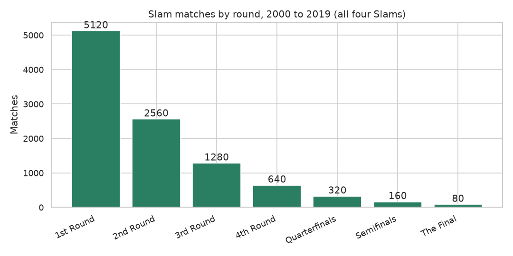
An ace is a serve the opponent does not touch. A double fault is two missed serves in a row. A break point is a chance for the returner to win the server's service game. I compared winners with losers, and the gap is wide. Match winners averaged 10.11 aces per match, against 7.34 for losers. Winners won 76.9 percent of first serve points, losers won 66.1 percent. Winners saved 68.1 percent of break points faced, losers saved 56.0 percent.
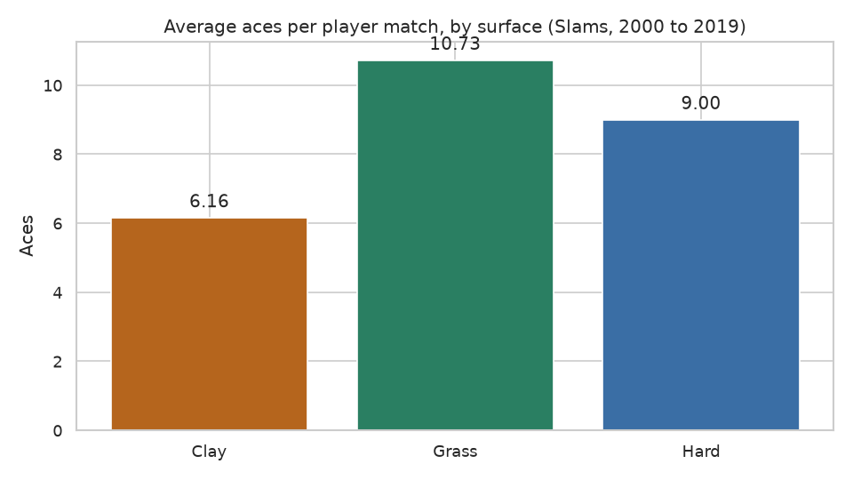
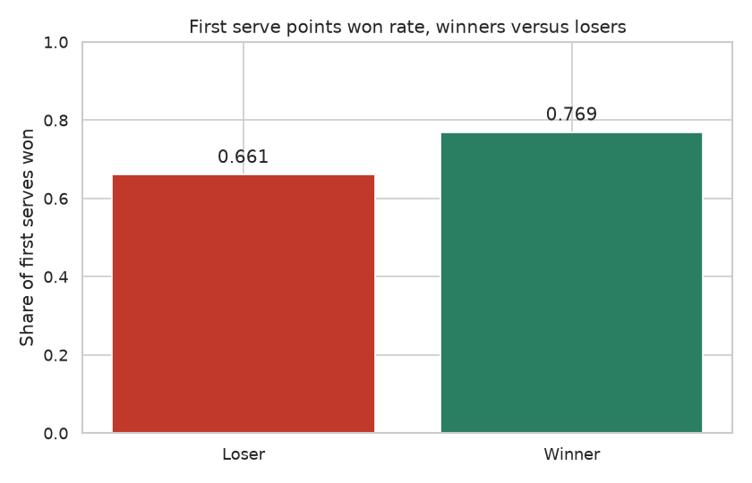
I also built a new score, the Serve Dominance Index (SDI): (aces + first serve points won - double faults) / service points played x 100. John Isner leads at 75.68, then Ivo Karlovic at 73.56. But neither won a Slam in this window. A huge serve helps, it does not finish the job alone.
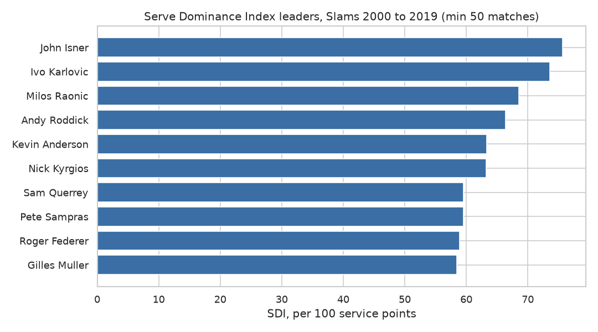
Clay is slow and the ball bounces high. Grass is fast and the ball stays low. Hard courts sit in between. Rafael Nadal won 90.2 percent of tour matches on clay from 2000 to 2024, against 78.4 percent on grass and 77.2 percent on hard. Roger Federer led on grass at 87.8 percent. My second new score, the Surface Versatility Score, rewards winning a lot and winning evenly: Novak Djokovic leads at 0.810, then Federer at 0.776, then Nadal at 0.747.
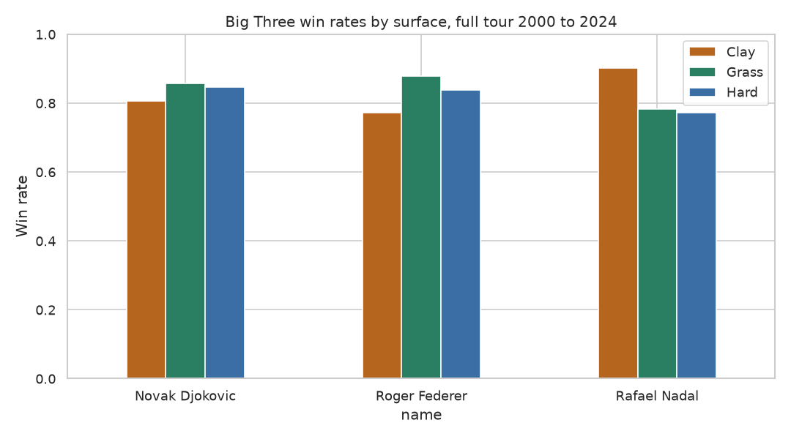
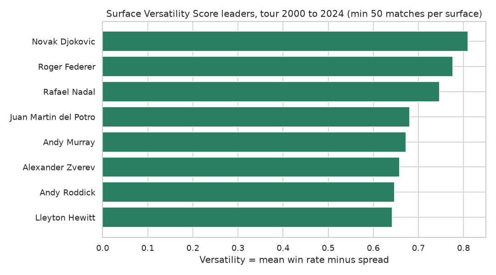
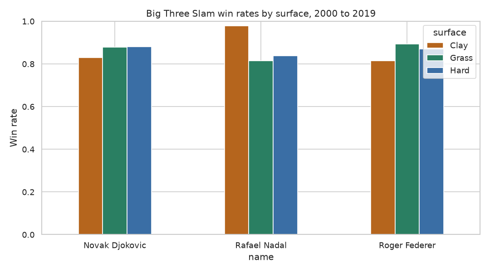
Federer, Nadal, and Djokovic won 55 of the 80 Slams from 2000 to 2019. All 55 came from 2003 onward, so they won 55 of 68 Slams from 2003 to 2019. When they played each other at Slams in this data, 45 matches in total, Nadal won 19, Djokovic won 16, and Federer won 10. For almost two decades, the question at a Slam was rarely who would win. It was which of three men would win.
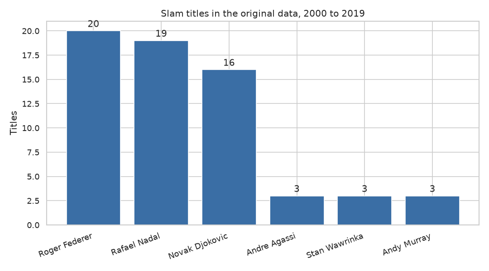
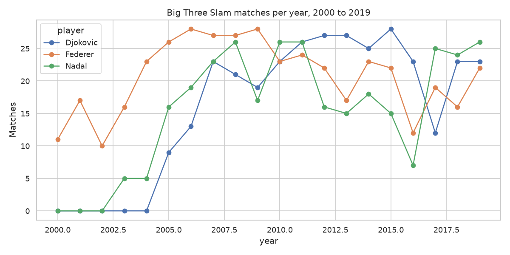
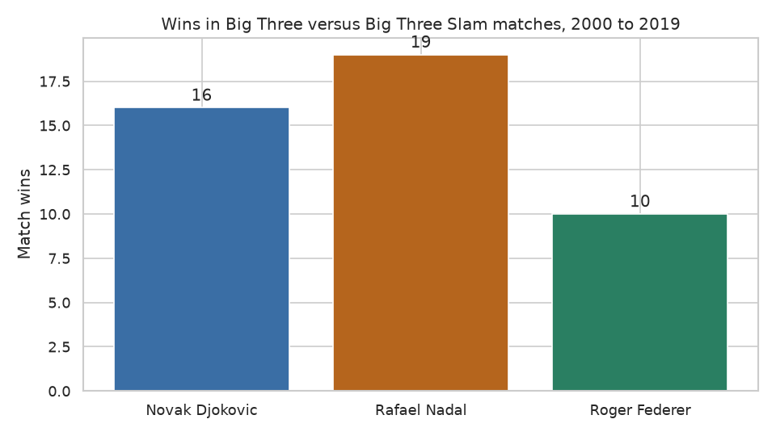
Rank 1 players won 31 of the 80 Slams, and ranks 2 to 4 won another 31. The top four ranks won 62 of 80. An upset in this project means the lower ranked player won. That happened in 28.3 percent of Slam matches (2,867 of 10,120), most often in round one, at 30.4 percent. Clay matches lasted longest on average, at 148.9 minutes.
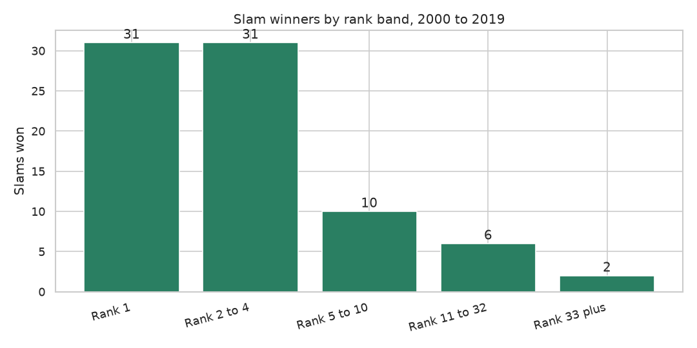
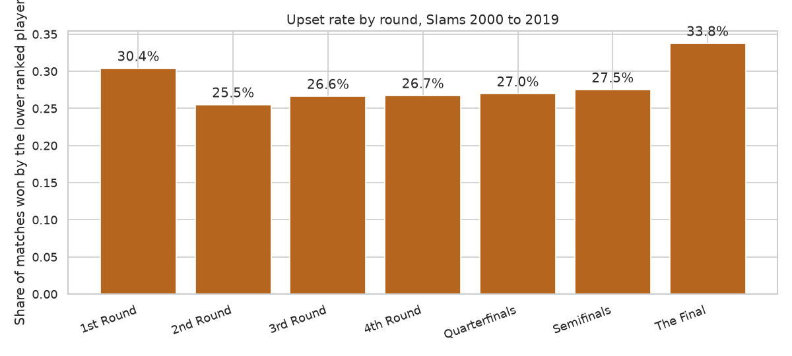
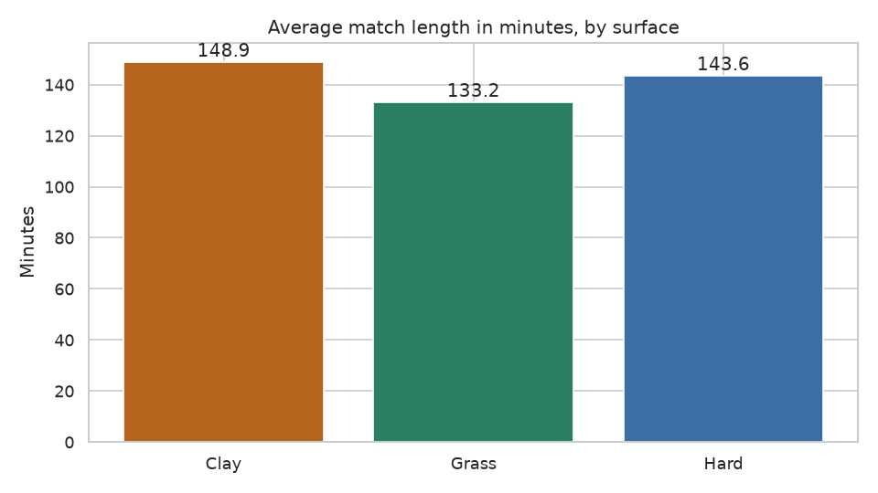
The original data stops in 2019 and covers men's Slams only. The Sackmann supplement, via an archive mirror because the original Sackmann repos returned 404 in November 2026, carries the story on. From 2020 to 2024, Djokovic won 8 Slams, Carlos Alcaraz won 4, Nadal won 3, Jannik Sinner won 2, and Dominic Thiem and Daniil Medvedev won 1 each. Wimbledon 2020 was cancelled, so 2020 has three finals, not four. In the women's game from 2000 to 2024, Serena Williams won 22 Slams, then Venus Williams and Justine Henin with 7 each.
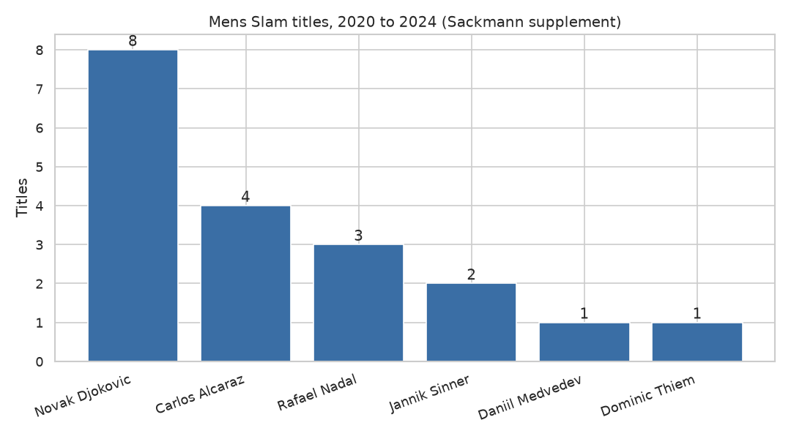
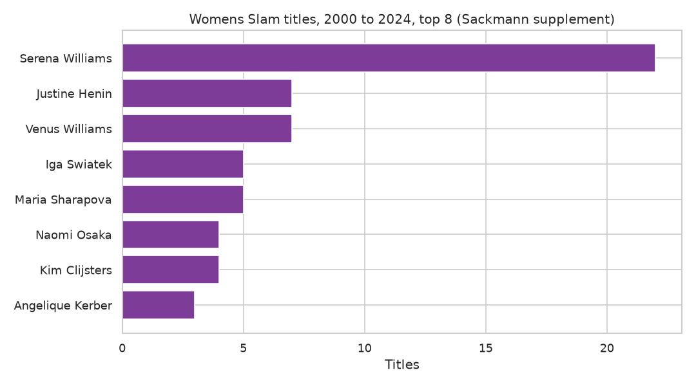
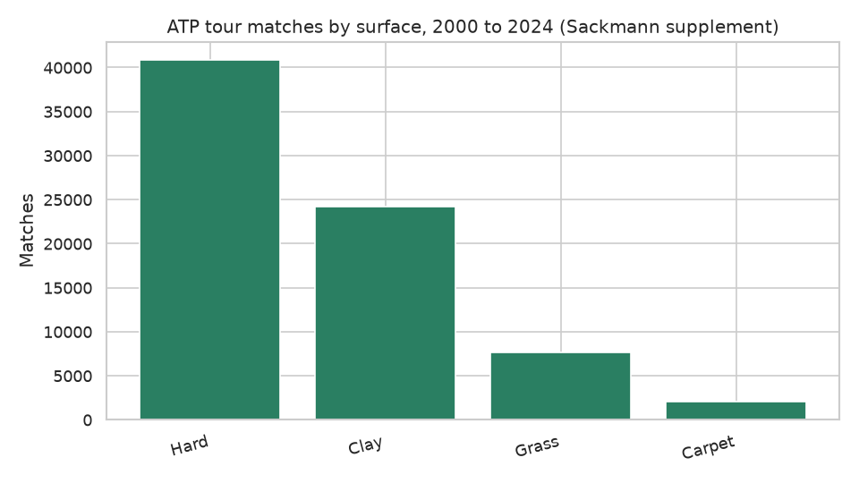
Build the serve first, but never stop there. The best servers in this data did not win Slams. The players who won Slams served well and did everything else well, on every surface. That is the lesson I would give a coach, and it is the lesson I took from building this project myself: a single skill can decide a match, but only a complete game decides an era.
Start with the notebooks in order, 01 to 06, to see every number worked out step by step. Full details are in README.md and BUILD_REPORT.md.